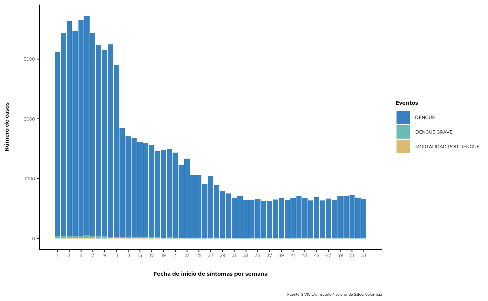
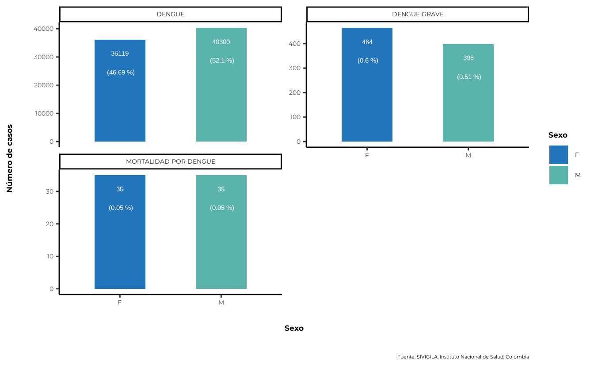
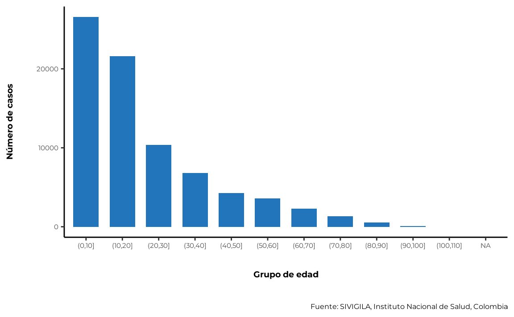
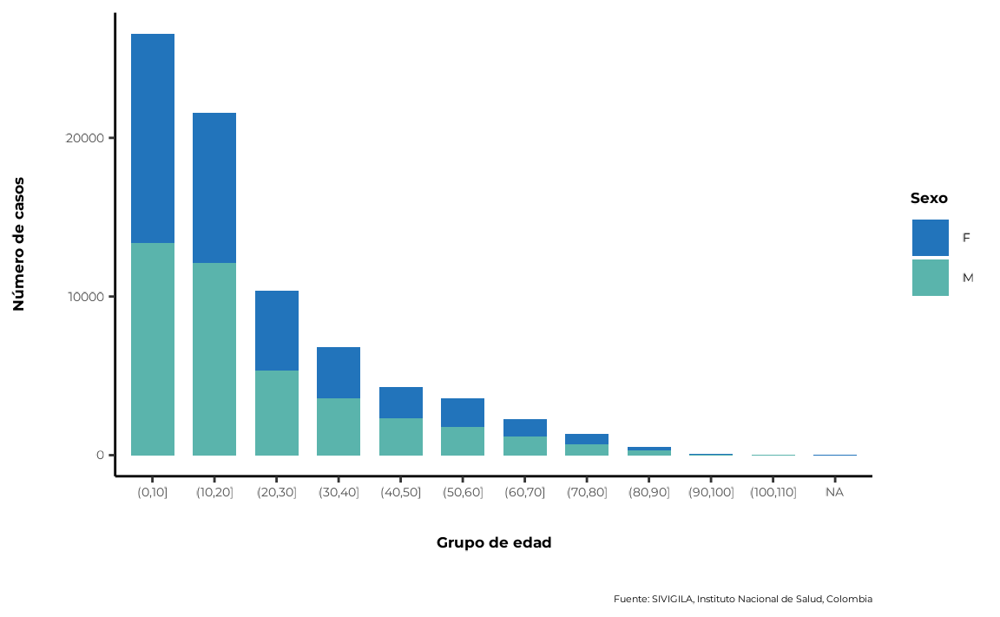

A continuación se describe un conjunto básico de instrucciones para
usar sivirep si:
- Ya has producido un archivo .Rmd y deseas editar un reporte.
- Deseas realizar análisis personalizados sin un archivo .Rmd.
1. Importación de datos de SIVIGILA
La fuente de SIVIGILA proporciona los datos de la lista de casos
históricos hasta el último año epidemiológico cerrado. El cierre de un
año epidemiológico generalmente ocurre en abril del siguiente año (por
ejemplo, si estás utilizando sivirep en marzo de 2023, es
posible que puedas acceder a los datos históricos hasta diciembre de
2021) para la mayoría de las enfermedades, con algunas excepciones.
Por favor, verifica las enfermedades y años disponibles utilizando:
lista_eventos <- list_events()Una vez que hayas decidido la enfermedad y el año de la cual deseas
obtener la información, import_data_event es la función que
permite la importación de datos desde la fuente de SIVIGILA utilizando
un formato parametrizado basado en la enfermedad y el año.
data_event <- import_data_event(
nombre_event = "Dengue",
years = 2020,
cache = TRUE
)💡 Tip 1 - Evita retrasos de tiempo al importar datos
sivirepestá diseñado para ayudar con el acceso a la fuente SIVIGILA. El proceso de descarga de información sobre enfermedades puede tomar varios minutos dependiendo del tamaño del conjunto de datos. Para evitar volver a descargar los mismos datos cada vez, puedes utilizar el parámetrocache = TRUEen la funciónimport_data_event.
💡 Tip 2 - Descarga datos de enfermedades para múltiples años
Con la funciónimport_data_event, es posible descargar datos para múltiples años. Por ejemplo, si deseas descargar datos de 3 años de una enfermedad en particular, puedes usar el parámetroyearde la siguiente manera:import_data_event(data_event = "dengue", years = c(2021, 2019, 2018), cache = TRUE)También puedes especificar años no consecutivos:import_data_event(data_event = "dengue", years = c(2024, 2018, 2013), cache = TRUE)
2. Limpieza de datos de SIVIGILA
Los datos de SIVIGILA son una fuente de información oficial altamente confiable, con certificación ISO de calidad de datos. Sin embargo, a veces puede haber algunos valores atípicos en los datos que requieran una limpieza adicional.
sivirep proporciona una función genérica llamada
limpiar_data_sivigila que envuelve diversas tareas para
identificar y corregir errores, inconsistencias y discrepancias en los
conjuntos de datos con el fin de mejorar su calidad y precisión. Este
proceso puede incluir la eliminación de duplicados, la corrección de
errores tipográficos, el reemplazo de valores faltantes y la validación
de datos, entre otras tareas, como eliminar fechas improbables, limpiar
códigos de geolocalización y estandarizar los nombres de las columnas y
las categorías de edad.
data_event_limpia <- limpiar_data_sivigila(data_event = data_event)Las funciones de limpieza dentro de
limpiar_data_sivigila se han recopilado y creado en base a
la experiencia de epidemiólogos de campo.
Estas pueden incluir funciones internas como:
-
limpiar_columnas_event: función que limpia y estandariza los nombres de columnas de los datos del SIVIGILA. -
limpiar_edad_event: función que limpia y estandariza las edades a años, según la clasificación del INS. -
limpiar_val_atipic: función que limpia valores atípicos de los datos de enfermedades. -
limpiar_fecha_event: función que limpia y estandariza fechas de los datos de enfermedades. -
estandarizar_geo_cods: función que estandariza los códigos geográficos, según la codificación DIVIPOLA. -
convert_edad: función que convierte edades a años según las unidades de medida del SIVIGILA.
Puedes utilizar estas funciones individualmente o simplemente usar la función genérica de limpieza.
3. Filtrar casos
sivirep proporciona una función que permite filtrar los
datos de enfermedades por departamento o nombre del municipio llamada
geo_filtro. Esto permite al usuario crear un informe a
nivel subnacional, seleccionando casos específicos basados en la
ubicación geográfica.
data_event_filtrada <- geo_filtro(
data_event = data_event_limpia,
dpto = "Choco"
)4. Distribución temporal de casos
En sivirep, la distribución temporal de casos se define
por las variables de fecha de inicio de síntomas y fecha de
notificación. Para cada una de estas variables, existen funciones
especializadas para agrupar los datos y generar los gráficos.
4.1. Agrupar los datos por fecha de inicio de síntomas en la escala temporal deseada
Para generar la distribución de casos por fecha de inicio de
síntomas, es necesario agrupar los datos por estas variables.
sivirep proporciona una función que permite esta agrupación
llamada agrupar_fecha_inisintomas.
casos_ini_sintomas <- agrupar_fecha_inisintomas(
data_event = data_event_limpia
)💡 Tip: Obtén los primeros n meses con más casos
Al construir una sección del reporte o analizar estos datos, puede ser útil obtener los meses con más casos. En
sivirep, puedes utilizar la funciónobtener_meses_mas_casospara obtener esta información.
El gráfico que permite visualizar esta distribución se debe generar
con la función plot_fecha_inisintomas. Ten en cuenta que,
incluso si has agrupado los datos por día, es posible que prefieras
representarlo por semana epidemiológica, como en:
plot_fecha_inisintomas(
data_agrupada = casos_ini_sintomas,
uni_marca = "semanaepi"
)
5.1. Variable de sexo
Cuando se analizan o se informan datos de enfermedades, a menudo es necesario determinar la distribución de casos por género o sexo. Sin embargo, la fuente de SIVIGILA solo registra el sexo.
sivirep proporciona una función que agrega y calcula
automáticamente los porcentajes por sexo después del proceso de
limpieza.
casos_sex <- agrupar_sex(
data_event = data_event_limpia,
porcentaje = TRUE
)Además, sivirep cuenta con una función para generar el
gráfico por esta variable llamada plot_sex:
plot_sex(data_agrupada = casos_sex)
La distribución de casos por sexo y semana epidemiológica se puede
generar utilizando la función agrupar_sex_semanaepi
proporcionada por sivirep.
casos_sex_semanaepi <- agrupar_sex_semanaepi(data_event = data_event_limpia)La función de visualización correspondiente es
plot_sex_semanaepi, que sivirep proporciona
para mostrar la distribución de casos por sexo y semana
epidemiológica.
plot_sex_semanaepi(data_agrupada = casos_sex_semanaepi)
5.2. Variable de edad
La edad es una variable importante para analizar, ya que es un factor de riesgo conocido para muchas enfermedades. Ciertas enfermedades y condiciones tienden a ocurrir con más frecuencia en grupos de edad específicos, y esta distribución puede ayudar a identificar poblaciones con mayor riesgo e implementar estrategias de prevención y control dirigidas.
sivirep proporciona una función llamada
agrupar_edad, que puede agrupar los datos de enfermedades
por grupos de edad. De forma predeterminada, esta función produce rangos
de edad con intervalos de 10 años. Además, los usuarios pueden
personalizar un rango de edad diferente.
casos_edad <- agrupar_edad(data_event = data_event_limpia, interval_edad = 10)La función de visualización correspondiente es
plot_edad.
plot_edad(data_agrupada = casos_edad)
5.3. Edad y sexo simultáneamente
sivirep proporciona una función llamada
agrupar_edad_sex, que puede agrupar los datos de
enfermedades por rangos de edad y sexo de forma simultánea y obtener el
número de casos y los porcentajes correspondientes. Además, permite
personalizar el intervalo de edad.
casos_edad_sex <- agrupar_edad_sex(
data_event = data_event_limpia,
interval_edad = 10
)La función de visualización correspondiente es
plot_edad_sex.
plot_edad_sex(data_agrupada = casos_edad_sex)
6. Distribución espacial de casos
Obtener la distribución espacial de los casos es útil para identificar áreas con una alta concentración de casos, agrupaciones de enfermedades y factores de riesgo ambientales o sociales.
En Colombia, existen 32 unidades geográficas administrativas (adm1) llamadas departamentos.
sivirep proporciona una función llamada
agrupar_mpio que te permite obtener datos de enfermedades
agrupados por municipios de un departamento específico
dist_esp_mpio <- agrupar_mpio(
data_event = data_event_filtrada,
dpto = "Choco"
)También existe una función para obtener la distribución de casos en
todos los departamentos de Colombia, llamada
agrupar_dpto:
dist_esp_dpto <- agrupar_dpto(data_event = data_event_limpia)Actualmente, con la función llamada plot_map, el usuario
puede generar un mapa estático de Colombia que muestra la distribución
de casos por departamentos y municipios.
💡 Tip - Evita retrasos al generar el mapa
Es necesario descargar los archivos shapefiles de Colombia para generar el mapa. Para evitar volver a descargarlos cada vez que lo quieras generar, puedes utilizar el parámetrocache = TRUEen la funciónplot_map.
💡 Tip: Obtener la fila con mayor número de casos Al construir una sección del reporte o analizar estos datos, puede ser útil
saber cuál es la variable que tiene la mayoría de los casos. Ensivirep, puedes utilizar la funciónobtener_fila_mas_casospara obtener esta
información. Esta función funciona con cualquier conjunto de datos que
contenga una columna llamada"casos"en cualquier nivel de agregación.
7. Incidencia
Con sivirep, puedes calcular tasas de incidencia por
geografía o sexo utilizando las proyecciones poblacionales del DANE o la
población a riesgo, dependiendo de la enfermedad y la disponibilidad de
los datos.
📑 Nota:
sivirepno incluye datos de población a riesgo para todos los eventos o enfermedades. Sin embargo, si tienes esta información, puedes proporcionarla usando el parámetrodata_incidenciaen cada función.
7.1 Incidencia por geografía
Puedes calcular la incidencia por los departamentos de Colombia o por
los municipios de un departamento específico, utilizando la función
calcular_incidencia_geo: